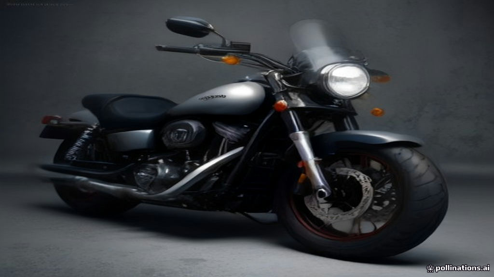

September 24, 2020. The air in Gurgaon, Haryana, hung heavy, not just with the usual metropolitan humidity, but with an unspoken finality. Inside the Harley-Davidson India office, the news dropped like a wrench on chrome: the iconic American motorcycle manufacturer was pulling out. Just over a decade after its grand entrance, promising freedom and the open road to a burgeoning Indian middle class, Harley-Davidson announced it would cease sales and manufacturing operations, shuttering its Bawal plant and significantly downsizing its Gurgaon sales office. It was a stark end to a journey that had seen 27,000 motorcycles sold, a number that, while significant, ultimately proved insufficient in a market of bewildering scale and complexity.
The World Before
Before Harley-Davidson roared into India in August 2009, the two-wheeler landscape was vastly different from its home turf in Milwaukee. India was, and remains, the world's largest motorcycle market, with annual sales reaching 17 million units by 2017. But this immense volume was largely driven by commuter bikes – affordable, fuel-efficient machines designed for daily transport rather than leisure. Brands like Hero Honda (now Hero MotoCorp) dominated, selling millions of motorcycles like the Splendor, which prioritised reliability and mileage.
The concept of a "premium motorcycle" segment, particularly for large-capacity cruisers, was nascent. Import duties were notoriously high, often exceeding 100% on Completely Built Units (CBUs), making foreign bikes prohibitively expensive. Despite this, the Indian economy was rapidly growing, incomes were rising, and investment in infrastructure like new highways hinted at a future where leisure riding could flourish. Matthew Levatich, then President and COO of Harley-Davidson Motor Company, articulated this optimism at their 2009 launch, stating, "The strong Indian economy, the growing middle class and the tremendous Government investment in infrastructure, makes this the perfect time for our entry."
Harley-Davidson wasn't alone in seeing this potential. Other international superbike manufacturers had already started making inroads. Yet, the sheer size and unique characteristics of the Indian market—price sensitivity, challenging road conditions, and a strong preference for practical, smaller-displacement motorcycles—meant that a direct transplant of a Western business model was always going to be a gamble. Royal Enfield, an Anglo-Indian brand with a long history in the country, held a formidable position in the mid-capacity segment, offering more accessible and culturally entrenched options.
The Crack
Harley-Davidson's initial strategy was bold: introduce 12-15 models from its Sportster, Dyna, VRSC, Softail, and CVO families, imported as CBUs. The price tags were eye-watering for the Indian market, starting around ₹7 lakh and stretching to ₹34.95 lakh (ex-showroom). The first dealership opened in July 2010.
To mitigate the crippling import duties and make its bikes more accessible, Harley-Davidson established a Complete Knock-Down (CKD) assembly plant in Bawal, Haryana, in 2011 (some sources cite 2014). This allowed them to import components and assemble the motorcycles locally, significantly lowering the final price. The Street 750, a smaller-engined model developed specifically for emerging markets like India, was a product of this strategy, priced between ₹4.7 lakh and ₹6.0 lakh.
Despite these efforts, the fundamental cracks in Harley-Davidson's Indian dream began to show.
First, pricing remained a persistent hurdle. Even with local assembly, the bikes were still considerably expensive. The Street 750, while "entry-level" for Harley, was about eight times higher than the median price of a mass-market motorcycle in India. Larger Harley models continued to command prices up to ₹55 lakh. This was largely due to continued import duties on components and low levels of localisation, meaning many parts still had to be imported. For most Indian consumers, buying a car was a more practical choice than a motorcycle costing over ₹5 lakh.
Second, there was a mismatch between the product and the market. Harley-Davidson's brand identity revolved around large, powerful cruisers designed for long, open stretches of road. In India, however, urban roads were often congested, uneven, and demanded nimble, smaller-capacity bikes. Indian riders, particularly those in the premium segment, increasingly favoured touring, adventure, or sports bikes from Japanese and European manufacturers. The premium cruiser segment, both globally and in India, was shrinking. Harley's attempts to introduce smaller, more affordable models like the Street series were met with mixed reception, with some critics noting lower refinement and performance compared to similarly priced competitors.
Third, dealership economics proved challenging. Setting up a Harley-Davidson dealership required substantial investment, estimated at ₹3-4 crore each. Maintaining these high overheads with relatively low sales volumes bled cash for many partners.
By February 2020, Harley-Davidson had sold over 25,000 motorcycles since its inception in India. While this marked a decade of operations, it translated to less than 30,000 units in total over eleven years, a minuscule fraction of India's 17 million annual two-wheeler sales. In fiscal year 2019, Harley's sales in India declined by 21.6%, and in FY2020, total volumes were just 2,495 units, plummeting to 680 units in FY2021.
This domestic struggle was compounded by Harley-Davidson's global restructuring efforts. Under new CEO Jochen Zeitz, the company launched "The Rewire" strategy in 2020, aimed at cutting its product portfolio by 30% and refocusing on its most profitable core markets, primarily North America and parts of Europe. India, despite its vast market size, simply didn't fit into this new, leaner vision. On September 24, 2020, Harley-Davidson announced its official exit, incurring approximately $75 million in restructuring costs and laying off around 70 employees in India.
What Happened Next
Harley-Davidson's departure left its existing customers and dealership network in limbo. However, the story didn't entirely end there. Just over a month later, on October 27, 2020, a new chapter began with an unexpected partnership: Hero MotoCorp, India's largest two-wheeler manufacturer.
Under this strategic alliance, Hero MotoCorp took on the responsibility of selling and servicing Harley-Davidson motorcycles, parts, accessories, and general merchandise through a combination of existing Harley-Davidson dealers and its own extensive network. Crucially, the agreement also included a licensing arrangement allowing Hero MotoCorp to develop and sell a new range of premium motorcycles under the Harley-Davidson brand name.
This partnership quickly bore fruit. In July 2023, the Harley-Davidson X440 was launched, a motorcycle co-developed by the two companies and manufactured at Hero's Neemrana plant in Rajasthan. This was followed by the unveiling of the Sprint 440 in November 2026, targeting beginner and returning motorcyclists.
The new strategy appears to be yielding better results. By fiscal year 2022, Harley-Davidson, through its partnership with Hero MotoCorp, had regained the number one sales position in India's 1,000cc and above motorcycle segment, selling 601 motorcycles, a 37% year-on-year growth from 206 units in FY2021. Hero MotoCorp is actively expanding its premium showroom network, reaching 22 full-line Harley-Davidson dealerships and 115 Hero Premia dealerships by March 2026.
The Indian premium motorcycle market itself is experiencing robust growth, valued at $1.4 billion in 2025 and projected to reach approximately $2.85 billion by 2031, with a Compound Annual Growth Rate (CAGR) of 12.60%. The 500-800cc segment, offering a balance of performance and affordability, accounts for about 90% of this market. Harley-Davidson's new, smaller-displacement models developed with Hero MotoCorp are strategically positioned to tap into this growing segment, even exploring global export opportunities.
Lessons to Take Away
- Market-Specific Product Strategy is Paramount: Harley-Davidson's initial failure stemmed from trying to sell globally successful products to a vastly different Indian market. The core appeal of a large, expensive cruiser did not translate to Indian roads, consumer preferences, or price points. The subsequent partnership with Hero MotoCorp, which led to the co-development of smaller, more appropriate bikes like the X440, highlights the necessity of designing products for the market, not just in the market.
- Affordability Trumps Aspiration for Scale: While Harley-Davidson's brand carried immense aspirational value, the prohibitive price points, even after local assembly, severely limited its market penetration. India's premium segment is growing, but it remains a niche within a mass market. Achieving meaningful scale requires hitting a price sweet spot that balances brand premium with local purchasing power, even if it means moving away from the "authentic" brand image.
- Distribution and Service are Make-or-Break: A robust, accessible, and cost-effective distribution and service network is critical in a geographically diverse country like India. Harley-Davidson's standalone dealerships struggled with high overheads and limited reach. The collaboration with Hero MotoCorp leverages Hero's unparalleled existing network, addressing a key operational challenge that Harley could not overcome alone.
- Global Strategies Must Accommodate Local Realities: Harley-Davidson's exit was part of a global "Rewire" strategy to focus on profitability. This decision, while sound from a global perspective, underscores how even iconic brands must adapt to local market realities or risk being deemed non-core. India's unique blend of high tariffs, diverse road conditions, and value-conscious consumers requires a strategy that goes beyond simply assembling imported parts.
References
- Harley-Davidson to wrap up India operations | Autocar India — Details Harley's exit, Rewire strategy, and potential for partnership.
- Harley Davidson confirms India exit, brings down the curtain on decade long journey - BusinessToday — Confirms exit, restructuring costs, layoffs, and initial entry optimism.
- Harley-Davidson Says It Will Leave India - Motorcycle Cruiser — Confirms exit, Bawal plant closure, and reasons like high taxes.
- Harley-Davidson India - Wikipedia — Overview of Harley's history in India, entry, and exit details.
- Why Is Harley-Davidson Betting on Hero and a Smaller Bike? - Open Magazine — Discusses the Hero MotoCorp partnership, X440, and Sprint 440.
- Harley-Davidson & Hero Motocorp Announce Agreements For India Market — Official press release on the Hero MotoCorp partnership.
- Harley-Davidson, Hero MotoCorp Eye Global Exports - MotorBeam — Details expanded partnership, X440, and future global plans.
- Harley-Davidson sells over 25,000 motorcycles in India since inception in 2009 - Team-BHP — Provides sales figures prior to exit.
- Why Harley Davidson Quit India — In-depth analysis of reasons for exit, including sales figures, pricing, and dealership issues.
- Harley-Davidson Regains Number One Sales Position In India's High-End Motorcycle Segment - CarAndBike — Details sales resurgence after the Hero MotoCorp partnership.